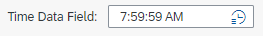
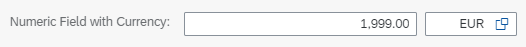
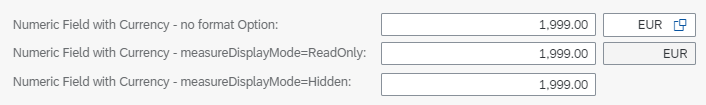
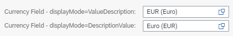

The Field Building Block
The Field building block provides an easy way to instantiate a property that was configured as part of the service
metadata. The Field analyzes the different annotations that are defined for the property to create the most appropriate
controls and additionally offers you configuration options for adjusting the behavior to fit your needs.
Usage
You can instantiate the building block by referencing the building block namespace within a fragment enabled for building block usage:
<macros:Field xmlns:macro="sap.fe.macros" metaPath="MyProperty"/>
This instantiates the actual control tree that corresponds to this building block.
You can use the Field building block either stand alone or inside the fields aggregation of a
FormElement building block for automatically getting a label for the field corresponding to the metadata. You can
use the Field building block inside custom header facets, custom sections, custom pages, and custom table
columns.
API
For information about theField API, see the API Reference.Examples
-
When you use a
Fieldbuilding block, the differences in the bound data elements result in different UI appearances, as shown in the following examples:A data element of type
Timewill appear as an input field with a time picker value help in edit mode.Custom Section Fragment for Data Element
timeData(XML)<core:FragmentDefinition xmlns="sap.m" xmlns:core="sap.ui.core" xmlns:macro="sap.fe.macros" > <VBox width="30vw"> <Text text="Time Data Field: " /> <macro:Field metaPath="timeData" id="timeDataField" /> </VBox> </core:FragmentDefinition>
The image below shows how this will look on the UI:
-
A numerical field with a currency using the
Currencytype fromsap/cds/commonwill appear as 2 input fields.While the XML in the custom section fragment looks the same as in the previous example, a data element with a currency will appear as 2 input fields: one for the numerical value and one for the selection of the currency in edit mode.
Custom Section Fragment for Data Element
numberWithCurrency(XML)<core:FragmentDefinition xmlns="sap.m" xmlns:core="sap.ui.core" xmlns:macro="sap.fe.macros" > <VBox width="30vw"> <Text text="Numeric Field with Currency: " /> <macro:Field metaPath="numberWithCurrency" id="numberWithCurrencyField" /> </VBox> </core:FragmentDefinition>
The image below shows how this will look on the UI:

-
In addition to the automatic generation of controls fitting best to the bound data when using the
Fieldbuilding block, you can also influence the appearance using theFieldbuilding block API.-
The following example shows how to use the
formatOptionsand the parametermeasureDisplayModein order to influence the currency field input readiness or even hiding it completely.Custom Section Fragment for Data Element
numberWithCurrencywithformatOptionsand parametermeasureDisplayMode(XML)<core:FragmentDefinition xmlns="sap.m" xmlns:core="sap.ui.core" xmlns:macro="sap.fe.macros" > <VBox width="30vw"> <Text text="Numeric Field with Currency - no format Option: " /> <macro:Field metaPath="numberWithCurrency" id="numberWithCurrencyField" /> <Text text="Numeric Field with Currency - measureDisplayMode=ReadOnly: " /> <macro:Field metaPath="numberWithCurrency" id="numberWithCurrencyFieldCurrencyReadOnly"> <formatOptions measureDisplayMode="ReadOnly" /> </macro:Field> <Text text="Numeric Field with Currency - measureDisplayMode=Hidden: " /> <macro:Field metaPath="numberWithCurrency" id="numberWithCurrencyFieldCurrencyHidden"> <formatOptions measureDisplayMode="Hidden" /> </macro:Field> </VBox> </core:FragmentDefinition>
The image below shows how this will look on the UI:
 -
The following example shows how to use the
formatOptionsand the parameterdisplayModeto influence the display of the value and description inside a currency field.Custom Section Fragment for Data Element
currencyField_codewithformatOptionsand parameterdisplayMode(XML)<core:FragmentDefinition xmlns="sap.m" xmlns:core="sap.ui.core" xmlns:macro="sap.fe.macros" > <VBox width="30vw"> <Text text="Currency Field - displayMode=ValueDescription: " /> <macro:Field metaPath="currencyField_code" id="currencyFieldValueDescription"> <formatOptions displayMode="ValueDescription" /> </macro:Field> <Text text="Currency Field - displayMode=DescriptionValue: " /> <macro:Field metaPath="currencyField_code" id="currencyFieldDescriptionValue"> <formatOptions displayMode="DescriptionValue" /> </macro:Field> </VBox> </core:FragmentDefinition>
The image below shows how this will look on the UI:

-
-
If the referenced data element is configured to have a value list with fixed values, you can use the
Fieldbuilding block to render the field as a radio button group. To do this, setformatOptionasfieldEditStyle="RadioButtons"For more information, see Value Help as a Dropdown List.By default, the radio button group is rendered in a vertical layout. You can also configure the radio button group to render in a horizontal layout by setting
radioButtonsHorizontalLayoutastruein themanifest.jsonfile.In the following sample code, the data element
FieldWithFixedValueListhas a value list containing fixed values, and theFieldbuilding block is configured to render the field as a radio button group in a horizontal layout.XML Annotation
<Text text="Field with fixed value list as radio buttons: " /> <macros:Field metaPath="FieldWithFixedValueList " id="FieldWithFixedValueListRadioButtonsHorizontal"> <formatOptions useRadioButtons="true" radioButtonsHorizontalLayout="true" /> </macros:Field>

-
The
Fieldbuilding block can be used for displaying and editing data from a JSON model. It can be used also for presenting a hard-coded string using thevalueproperty.This functionality supports text fields, date and time picker, fields with value help, and object status. It doesn't support editing of rating indicator field.
<macros:Field id="myCustomField" metaPath="/RootEntity/name" value="{myJSONModel>/customModelBindingPath}" /> -
You can bind the description of the
Fieldwith value help to a JSON model. To do it, use thedescriptionproperty.The
descriptionproperty should be used in conjunction with thevalueproperty.<macros:Field id="myCustomField" metaPath="/RootEntity/name" value="{myJSONModel>/customModelBindingPath}" description="{myJSONModel>/customModelDescriptionBindingPath}" />